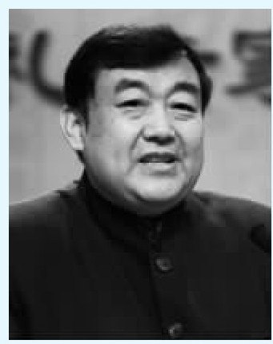

2015年春节团拜会上，习近平总书记说：“不论时代发生多大的变化，无论生活格局发生多大的变化，我们都要注重家庭建设，注重家庭，注重家教，注重家风。”紧密结合培育和弘扬社会主义核心价值观，发扬光大中华民族传统家庭美德，促进家庭和睦，促进亲人相亲相爱，促进下一代健康成长，促进老年人老有所养，使千千万万个家庭成为国家发展、民族进步、社会和谐的重要基点。
习近平总书记在讲话当中明确提出，家庭建设，注重家庭，注重家教要紧密结合，培育和弘扬社会主义核心价值观，发扬光大中华民族传统的家庭美德。在现代家庭教育当中，传统的伦理道德教育应该是一个根本。因为中国传统伦理道德，主要的就是教人怎么做人，怎么处事。